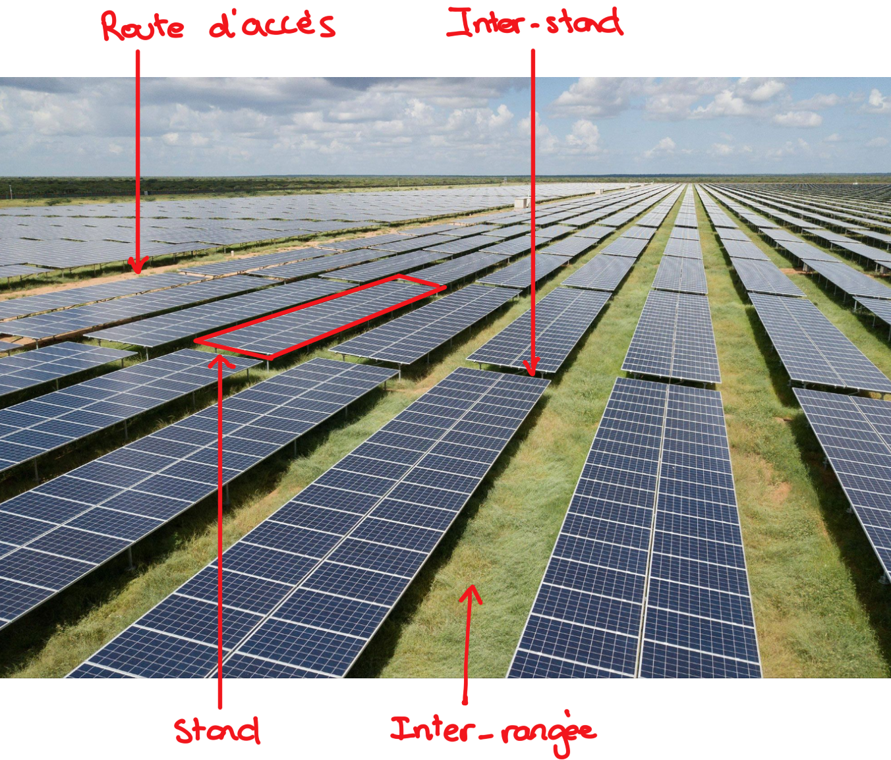

Modélisation d'un parc photvoltaïque sur Excel
- POK
- 2024-2025
- temps 2
- Damien WOLBERT
Afin de pouvoir modéliser facilement un parc photovoltaïque avec un logiciel connu et utilisé par tous (Excel), ce POK me permettra de mettre en pratique mes connaissances en VBA et de mettre en place un outil permettant l'estimation des quantitatifs de câbles nécessaires la construction d'un parc solaire.
- Programmation en VBA.
- Connaissance de la structure générale d'un parc solaire.
- Fichier Excel à la fin du sprint 1 : Fichier .xlsm à télécharger
Cadrage
Objectifs principaux
- Réussir à modéliser de manière graphique et visuelle un parc photovoltaïque.
- Mettre en place un parcours utilisateur simple et agréable.
- Ajuster le niveau de précision des estimations et outils au temps alloué au projet.
Monitoring du projet
Back-log et horodateur
Sprint 1
Sprint 1
- [x] Réaliser le cadrage du projet
- [x] Sprint backlog 1
- [x] Brainstorming général
- [X] Recueillir le besoin
- [x] Lister les fonctionnalités principales du système
- [x] Parcours utilisateur rapide
- [x] Définir une première version des interfaces entre le système et l'utilisateur
- [x] Lister les données d'entrées
- [x] Trame des templates de chacune des interfaces
- [x] Trame du template des données de sortie
- [x] Mise au propre des templates des données d'entrée
- [x] Mise au propre des templates des données de sortie
- [x] Rédaction des fonctions permettant la création des templates de grille.
- [x] Rédiger le sprintbacklog 1 sur le site do-it
- [x] Rédiger le CR du sprint 1 sur le site Do-it
| Date | Heures passées | Indications | Niveau d'efficacité |
|---|---|---|---|
| 04/11/2024 | 0.5h | Cadrage projet | |
| 05/11/2024 | 0.5h | Recueil du besoin auprès d'ingénieurs et projeteurs électriciens | |
| 06/11/2024 | 0.5h | Recadrage du projet et rédaction des premières hypothèses fortes. | |
| 12/11/2024 | 0.25h | Mise à jour du sprint back-log 1 | |
| 12/11/2024 | 3.5h | Interface utilateur et essais | |
| 14/11/2024 | 2.5h | Interface utilisateur et essais | |
| 18/11/2024 | 2.5h | Interface utilisateur et essais | |
| 18/11/2024 | 2h | Rédaction sur le site Do-it en tenant compte des nouvelles consignes. | |
| 20/11/2024 | 2h | Rédaction sur le site Do-it en tenant compte des nouvelles consignes. |
Total du sprint : 14h25 soit 43% de plus que le temps alloué
Le dépassement du quota horaire est dû à la modification des consignes ayant entrainé un changement dans les attentes de rédaction et de raisonnement.
Sprint 2
Sprint 2
- [ ] Rédaction des fonctions informatiques permettant le calcul des distances sur la grille
- [x] Lister les fonctions informatiques a priori nécessaires
| Date | Heures passées | Indications |
|---|
Total du sprint 2 :
QUOTA HORAIRE TOTAL POK 2 :
Analyse post-morterm
Sprint 1
Sprint 1
GESTION GENERALE DU TEMPS : Bonne estimation de la quantité de tâches pour la sprint 1. Il aurait fallu commencer directement une démarche de conception de l'interface utilisateur par l'essai, telle que définie plus bas. Cela aurait permis un gain de temps permettant d'anticiper de potentielles difficultés de programmation durant le sprint 2.
DIMENSIONNEMENT DU PROJET : Projet a priori bien dimensionné. La démarche du sprint 1 va permettre une plus grande efficacité pour le sprint 2 : raisonnement à partir de connaissance détenues et pas des objectifs idéaux à atteindre.
DIMENSIONNEMENT DES TACHES : Division exagérée des tâches entrainant une trop grande rigidité lors de la rédaction (à l'inverse du POK1). A la fin du sprint, toutes les tâches fixées on été réalisées, toutefois ni l'ordre ni la séparation des activités n'ont été réellement suivis.
Sprint 2
Sprint 2
Vocabulaire et fonctionnement d'un parc photovoltaïque
Afin de comprendre la suite de ce POK, il est nécessaire de s'intier au monde du photovoltaïque ainsi qu'à son vocabulaire.
Constitution générale d'un parc photovoltaïque
Constitution générale d'un parc photovoltaïque
Le schema ci-dessous présente la configuration de parc utilisée tout au long du projet (c.f. hypothèses)


**Figure :** « «Folie» ou projet «d’intérêt général»? Un parc solaire XXL à l’étude en France ». parismatch.com, 8 février 2022, https://www.parismatch.com/Actu/Environnement/Folie-ou-projet-d-interet-general-Dans-le-sud-ouest-de-la-France-un-parc-solaire-XXL-a-l-etude-1786628.
- String : Ensemble de panneaux connectés en série.
- BR : Boite de raccordement - Organe électrique auquel sont branchés des plusieurs strings en parallèle.
- PTR : Poste de transformation - Cabinet électrique dans lequel la puissance envoyée par plusieurs BR est convertie par des onduleurs (passage de courant continu à alternatif), puis transformée par un transformateur (augmentation de la tension du signal). Les différents PTR sont connectés en série ou en parallèle au poste de livraison, interface entre le parc et les réseaux d'ENEDIS et/ou de RTE.
- Section de câble : Section transversale du conducteur d'un câbles. Les petites sections correspondents généralement aux câbles de 4, 6 et 10 mm² ; les grandes sections correspondent aux section de 185, 240, 300 et 400 mm².
- Stand : Structure soutenant les panneaux photovoltaïques. Un stand peut supporter plusieurs strings.
Comment recueillir le besoin ?
| Etapes | Résultats | Difficultés rencontrées |
|---|---|---|
| Discussion avec des projeteurs électriciens et ingénieurs électriciens | Fonctionnalités principales et enjeux du dimenssionnement d'un parc | Les ingénieurs et projeteurs avaient tendance à continuellement sur-enchérir en voyant les potentialités de l'outil. Il était difficile de rester dans le cadre d'un projet de 20h. Remarque : J'ai chosisi de recueillir ce besoin lors d'un moment informel afin de limiter au plus ce comportement. Cela c'est en effet révélé efficace. |
| Tests et essais | Tout en appliquant les exigences recuillies précédemment, j'ai pû me rendre compte des difficultés techniques imposées par Excel et ainsi rédiger des hypothèses permettant d'ajuster le projet au cadre du POK. | Tendance à vouloir ajouter des fonctionnalités et donc de la complexité plutôt que de se focaliser sur une maquetter préliminaire. |
Un projeteur électricien est chargé de la réalisation des plans électriques globaux à partir des exigences des inégnieurs électriciens. Il produit souvent des livrables réalisés sur des logiciels comme AutoCAD.
Hypothèses fortes :
- Le parc n'utilise qu'une seule technologie d'onduleur : onduleurs centraux, positionnés dans les stations de transformation.
- Les rangées sont positionnées verticalement.
- Les rangées sont soit perpendiculaires soit parallèles aux routes d'accès.
- Les strings sont câblées en entérré si aucune boite de raccordement n'est présente dans l'interrangée à sa gauche ou à sa droite.
- Chaque stand ne contient qu'une seule string.
- Les tranchées solaires (tranchées pour les câbles de petite section) sont perpendiculaires aux stands et passent au niveau des inter-stands.
Fonctionnalités principales
- Positionner les éléments principaux du parcs de manière graphique en imitant un fonctionnement drag&drop :
- Stands
- Boites de raccordement (BR)
- Poste de transformation (PTR)
- Routes d'accès
- Positionner et caractériser les différentes strings
- Affecter les strings aux différentes BR
- Sections de câble utilisées pour le raccordement des strings aux boites de raccordement.
- Déterminer les caractéristiques de design :
- Méthodologie de câblage de chaque string : câblage enterrée ou aérien.
- Numérotation des éléments.
- Extraire les données du design dans un tableau :
- Caractéristiques de raccordement de chaque string.
- Quantités et longueurs totales de câble.
Comment déterminer le format de l'outil et le raisonement de calcul ?
Démarche
Le format de l'outil doit répondre à deux critères principaux : facilité d'utilisation et rapidité de développement.
- Pour garantir une facilité d'utilisation : Déterminer le parcours utilisateur en simulant la conception d'un parc photovoltaïque et en testant différentes possibilités. Ce parcours définira par la suite la stratégie de programmation.
- Pour la rapidité de développement : Créer des templates permettant de systématiser la méthode et d'accélérer la rédaction du code et tester au fur et à mesure les solutions techniques pouvant à la fois répondre à l'exigence utilisateur et être développée le plus rapidement possible.
Code et programmation
Afin de créer les différents templates, j'ai rédigé des Sub VBA à partir de petits unitaires. Exemple : afin de créer une grille satisfaisante, il était nécessaire d'évaluer manuellement la largeur des lignes et colonnes, puis de dimensionner l'intégralité des colonne via un Sub.
Les unités de dimensionnement des lignes et des colonne ne sont pas les même : une colonne de largeur 1 n'a pas la même épaisseur qu'une ligne de hauteur 1. Il est nécessaire de réaliser des opération de propotionnalités si on veut utiliser une épaisseure unitaire commune.
Résultats
Cette démarche a permis de déterminer le parcours utilisteurs, la stratégie de programmation, les templates nécessaires et fonctionnels ainsi qu'une liste non exhaustive des fonctions à coder.
Parcours utilisateur : Segmentation en phases permettant l'utilisations de grilles "simples" et donc copiées depuis des templates.
| Phase | Action utilisateur | Interface utilisateur |
|---|---|---|
| Phase 0 | Complétions des données des équipements : dimension des stands, dimension des routes d'accès... | Template d'inputs |
| Phase 0bis | Ouverture de l'outil et appuie sur le bouton "Créer un nouveau design" sur la page d'accueil | Page d'acceuil |
| Phase 1 | Positionnement des stands, des routes et du PTR | Grille template n°1 |
| Phase 2 | Positionnement des boites de raccordement sur le modèle défini en phase 1 | Grille template n°2 |
| Phase 3 | Allocation des strings aux différentes BR sur le modèle défini en phase 2 | Grille template n°3 |
| Phase 4 | Allocation d'une section de câble de raccordement pour chaque string sur le modèle défini en phase 3 | Grilles template n°4.1 et 4.2 |
| Phase 5 | Lancement du calcul par un bouton de la page d'acceuil | Page d'accueil |
Fonctions et éléments à coder :
- Colorer des cellules en rouge, vert, marron et violet.
- Repérer l'ampleur du parc (dernière ligne et dernière colonne utilisée).
- Créer une grille de phase 2 à partir des informations la grille phase 1.
- Créer une grille de phase 3 à partir des informations la grille phase 2.
- Créer des grilles de phase 4.1 et 4.2 à partir des informations la grille phase 3.
- Parcourir une grille.
- Déterminer la méthode de raccordement d'une string en fonction de la position de la BR à laquelle elle est allouée (aérien ou enterré).
- Numéroter toutes les BR.
- Numéroter toutes les strings.
- Extraire les données de chaque string dans le tableau de sortie (lui-même réalisé à partir d'un modèle).
- Calculer une distance entre deux cellules à partir des données d'entrée (dimension des stands etc...)
Templates et modèles : les templates et modèles sont visibles dans le document Sprint 1.